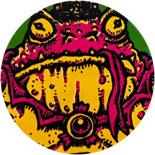

THROW IT IN THE PIT
Having brought the murmuring mummified head of a mad mystic to the Village Elders of Gutfish Ford, you've been turned away & banished from the Town. The elders insist that you take the Soothsayer's Head as far from the ford as possible & destroy it utterly! Meanwhile, the soothsayer begs to be brought home to the Stone Circle while a pair of powerful & monstrous hunters draw closer & closer to their prey.
SETUP
The following Clues Ġ represent spaces where the Soothsayer's Head can be disposed of (safely or otherwise). The Clue Ġ counters function as reminders of where the Soothsayer's Head can be destroyed or discarded. The Soothsayer's magic protects him from being destroyed by things like fire, acid, explosives, Daemon's Blood, etc.
The counter on Tomb Lake represents the option to throw the head into Tomb Lake from any Lake Port Đ space.
| Ġ The Hell Pit | Ġ Stone Circle |
| Ġ The Maze | Ġ Tomb Lake |
| Ġ Skull Bridge |
The elders' concern is not unfounded. The Soothsayer has many enemies, even in his current state of living death. The Scroglin King covets the Soothsayer's mystical knowledge while a daemonic force climbs from the chasm to collect on a dark deal made in ages past. The elders foresee only disaster & doom if either of these malignant forces takes possession of the Soothsayer's Head & learn his secrets. For the sake of all mankind you must not allow this to happen!
Place the following Epic Monster đ counters face down at the indicated Location:
| ĝ Scroglin King at Tower Island |  |
| ĝ Daemonic Voivod at Skull Bridge |
OBJECTIVE
There are seven ways to dispose of the Soothsayer's Head & thereby complete your mission. Each grants the adventurers a different 'Reward', as described below. You cannot sell the Soothsayer's Head during this mission - you've missed your opportunity for a quick sale!
Throw him into the Hell Pit
If you are at the Hell Pit at the end of a game turn, you may return the Soothsayer's Head to the game box (remove the card from the game), then Rest at Gutfish Ford to complete the mission. When you do, each adventurer gains 1 Luck Ğ & you may remove one green counter & one red counter from the Doom track.
Leave him in the Maze
If you are in the Maze at the end of the Encounter Phase, you may discard the Soothsayer's Head, then Rest at Gutfish Ford to complete the mission. When you do, each adventurer gains 1 Luck Ğ, then you must increase the Danger Level at each space with a Voidgate.
Throw him off Skull Bridge
If you are at Skull Bridge at the end of the Encounter Phase, you may return the Soothsayer's Head to the game box (remove the card from the game). Rest at Gutfish Ford to complete the mission. If you do, each adventurer gains 1 Luck Ğ, then you must increase the Danger Level at the Blasted Heath, Skull Bridge & the Wasteland.
Throw him in the Lake
If you are at any Lake Port Đ space at the end of the Encounter Phase, you may discard the Soothsayer's Head. Rest at Gutfish Ford to complete the mission. If you do, you must increase the Danger Level at the Fishmonger Camp, Tomb Lake & Tower Island. Then, search the Doom deck for the Crushing Menace card & put it into play (if it is not already in play).
Bring him home to Stone Circle
If you Rest at Stone Circle, you may discard the Soothsayer's Head & complete the mission. If you do, each adventurer gains 1 Luck Ğ, then search the Doom deck for the Bubbling Death card & put it into play (if it is not already in play).
Give him to the Scroglin King
If you are in the Scroglin King's space at the start of the Encounter Phase, you can offer the Soothsayer's Head to him to avoid a fight. Discard the Soothsayer's Head & remove the Scroglin King counter from the board - do not fight monsters this turn. You must Rest at a Town Ę to complete your mission. If you do, search the Doom deck for the Fishoid Wars card & put it into play (if it is not already in play).
Give him to the Daemonic Voivod
If you are in the Daemonic Voivod's space at the start of the Encounter Phase, you can offer the Soothsayer's Head to the Daemonic Voivod to avoid a fight. Discard the Soothsayer's Head & remove the Daemonic Voivod counter from the board - do not fight monsters this turn. You must Rest at a Town Ę to complete your mission. If you do, search the Doom deck & discard pile for the Technotonic Devastation card & resolve it.
THE HEAD HUNTERS
If you enter a space with a face down Epic Monster đ counter, flip that counter face up.
During the Danger Phase, if you draw a Danger card corresponding to a space with a Clue Ġ or Epic Monster đ counter, flip an Epic Monster đ counter in that Region face up.
For example, if you draw the Stone Circle, Tomb Lake, or Tower Island Danger cards, flip the Scroglin King counter face up (at Tower Island). If you draw the Hell Pit or Skull Bridge Danger cards, flip the Daemonic Voivod counter face up (at Skull Bridge).
Once face up, the Scroglin King & Daemonic Voivod will follow the adventurer carrying the Soothsayer's Head starting on the turn after they were flipped. If the Soothsayer's Head has already been discarded, they will follow the last adventurer to carry it & continue to do so until destroyed or otherwise removed.
At the end of this mission, remove facedown Epic Monster đ counters remaining on the board. Faceup Epic Monsters will continue to hunt the party during the following mission(s).

MISSION PATH
If you returned the Soothsayer's Head to the Stone Circle, he thanks you for your efforts & whispers secrets about a wondrous palace-temple hidden deep in the Mountains of the Mouth. Do you dare follow the dubious directions of this delirious dead man? Continue on to İVisions at the Peak, or choose to ignore the rotting fool & İEstablish a Base here in the swamp.
Otherwise you may claim to have destroyed the head & attempt to İEstablish a Base in Gutfish Ford or another Settlement Ė outside of the Lowlands.